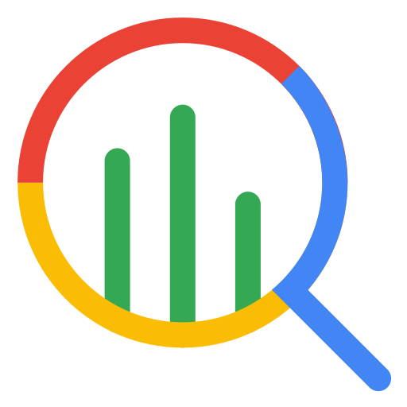

Live Market & Physical Signals
Watches secondary Distributor Management System (DMS) stock, Google Maps urban traffic bottlenecks, gate queues, and e-Way Bills continuously.
Ex: Detects Sony World 4:15 PM cutoff throttling beat BLRB04
 03 · Sense · Reason · Act
03 · Sense · Reason · Act
Dashboards only sense problems. True Agentic TM&D closes the loop—correlating live enterprise and Google Maps telemetry, reasoning across shelf-life and route economics, and writing real operational actions back into ERP, Transportation Management Systems (TMS), and beat tickets.
Watches secondary Distributor Management System (DMS) stock, Google Maps urban traffic bottlenecks, gate queues, and e-Way Bills continuously.
Decomposes revenue leakage (Tree SHAP) & solves 3D axle-safe co-loading and Fair-Share allocation within policy limits.
Executes approved beat splits, early Advanced Shipping Notices (ASNs), GPS chargeback disputes, and Indic voice driver reroutes directly in DMS/TMS.

Why Google wins last mile: live evening traffic bottlenecks (e.g., Koramangala / Sony World cutoff), municipal no-entry curfews, and accurate kirana geocoding power route & beat physics natively.

Native voice understanding in English, Hinglish, Hindi, Kannada, Tamil & Telugu for field salesmen and fleet drivers—plus camera Optical Character Recognition (OCR) for damaged pods and shelf displays.

Joins SAP DMS, WMS, and carrier FASTag streams without replacing ERPs, enforcing Role-Based Access Control (RBAC) and human approval before cash or stock moves.
Compare CEO diagnostic action (BeatPulse & FleetFlow Hub Audit) with hands-on Dispatch 3D Cargo & Hinglish voice rerouting (Kaveri Live).